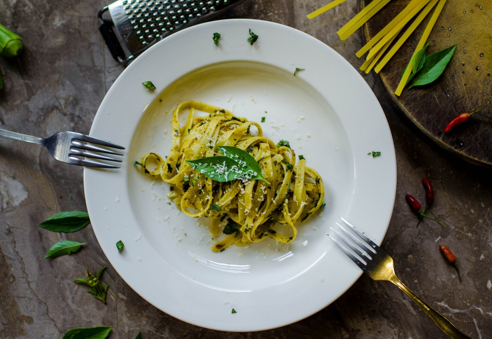

A plate of freshly-prepared pasta with parmesan cheese and some basil leaves
What is Pasta
Pasta is a type of food typically made from an unleavened dough of wheat flour mixed with water or eggs, and formed into sheets or other shapes, then cooked by boiling or baking. Rice flour, or legumes such as beans or lentils, are sometimes used in place of wheat flour to yield a different taste and texture, or as a gluten-free alternative. Pasta is a staple food of Italian cuisine.
Description
Our panzerotti are always fresh and deep-fried in front of your eyes. Don't hesitate to ask us for additional ingedrients, such as mushrooms or bacon pieces.
Ingredients
125ml lukewarm water
7g white-sugar
3.5g active dry-yeast
1 pinch salt
10g native virgin olive oil
230g bread flour
120g freshly-grated mozarella cheese
tasty tomatoe sauce
Steps
Dissolve sugar in water
Add active dry yeast and let it for a couple of minutes
Add flour, olive oil and salt, and combine it into a smooth dough
Cover it with a kitchen towel and let it rest for 1 hour in a warm and dark place